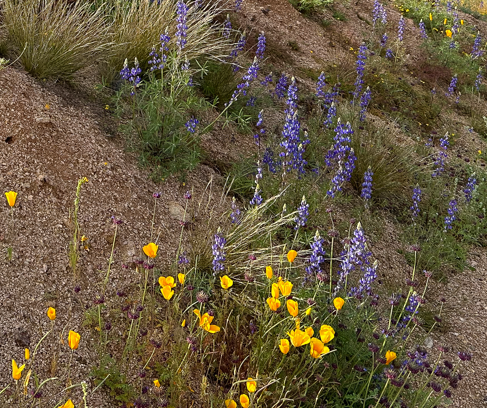

Habitat range

California Poppy is native to areas in Arizona, California, Nevada, New Mexico, Oregon, Washington, Baja California, Mexico, and Sonora, Mexico.
California Poppies can be identified by their distinct bright orange flowers and are shaped similar to an upside-down bell, on upright stems. The flower pedals (usually 4-6 pedals) fold in during cold or dark weather and fold back out during warmer sunny weather. The plants leaves have a blue-green tint to them.
Plant Identification


Plant Uses
California Poppies can be identified by their bright orange-yellow bell-shaped flowers during bloom season (February-May). They have a deeper orange spot at the base of each petal. Their leaves are hairless, have a bluish-green tint, and form a rosette at the base of the plant.
California Poppies have been used to treat insomnina based sleep disorders (by drinking poppy tea before bed) and also has antispasmodic properties, helping to relax the muscles. It can also be used to treat and prevent head lice.